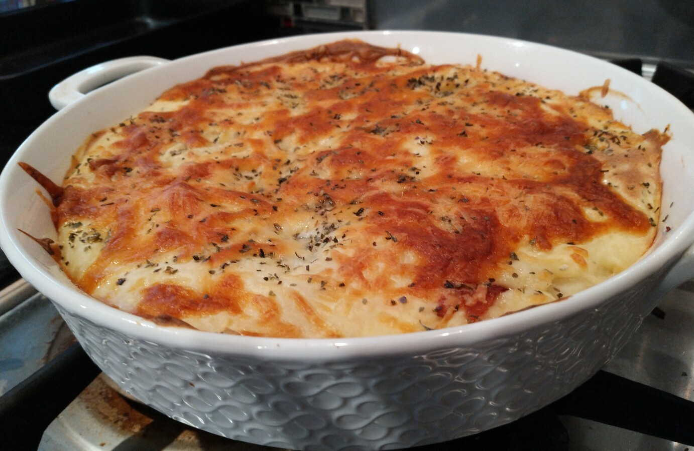

Potato Bake
 Meat
Meat

Preheat oven to 180 degrees, grease casserole dish
500gpotatoes
Boil potatoes for 10 mins, then allow to cool
4 rashersof bacon
Meanwhile fry bacon
- red onion, diced
Slice cooled potaoes, layer in dish with bacon and onion
- 70g margarine
To make sauce, melt margarine
- 1/2 cup plain flour
- 3 cups of milk
Add flour and slowly whisk in milk until a thick sauce develops
Pour sauce over potato and sprinkle with cheese
Bake in oven until golden